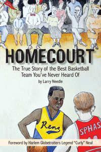

How a small kid in South Philly embarked on a journey that would take him around the world with the Harlem
Globetrotters
How a small kid in South Philly embarked on a journey that would take him around the world with the Harlem
Globetrotters


 How a small kid in South Philly embarked on a journey that would take him around the world with the Harlem
Globetrotters
How a small kid in South Philly embarked on a journey that would take him around the world with the Harlem
Globetrotters

|  |
HomecourtThe True Story of the Best Basketball Team You've Never Heard OfForeword by Harlem Globetrotters Legend "Curly" NealLarry Needlepaper EAN: 978-0-98195-608-4 (ISBN: 0-9819560-8-4) |
Louis Klotz�nicknamed �Red� for his shiny red hair�may have been one of the smallest kids in his grade in South Philadelphia in 1933, but he always knew that he wanted to play basketball for the SPHAS, the South Philadelphia Hebrew Association basketball team. Red�s journey, which started in the �cages� of South Philly, led to playing for Villanova, and for the SPHAS, where he won an American Basketball League championship. Ultimately, he played and coached for the Washington Generals against the legendary Harlem Globetrotters for decades.
In Homecourt: The True Story of the Best Basketball Team You�ve Never Heard Of, Larry Needle provides a biography of Red Klotz for young readers. Klotz may have won most of the games he played as a kid, but professionally, he lost 10,000 games against the Globetrotters. Nevertheless, Klotz is famous for scoring the winning shot against the Globetrotters in Martin, Tennessee in January, 1971�the last time the Generals beat the Globetrotters.
This illustrated book recalls the SPHAS games at the Broadwood Hotel (which now has a historical marker commemorating the team), the team�s coach, Eddie Gottlieb, and Klotz�s post-SPHAS career. It will inspire any kid who loves�or dreams of playing�basketball.
Distributed by Temple University Press for the New City Community Press
"Although written for youth, the messages of tolerance and sportsmanship in this small book are good for all ages. The give and take between Red and his Russian-Jewish parents (the stern father who wants his son to help him in his carpentry shop instead of playing ball, and the sweet wise mother) adds depth to the exciting, competitive sports story.... This easy-to-read book is ideal for pupils learning English as a first or second language."
—The Jewish Scene
"In addition to the sports history lessons, Homecourt is a possible entryway into discussions about antisemitism, immigration, identity, the Holocaust, sportsmanship, tenacity and other such topics with your children. The illustrations...offer a sense of time and place to the story. One of the highlights is the afterword by Klotz himself."
—Jewish Independent
"Homecourt is an obvious labor of love. The story it tells is one that everyone needs to hear. Do what you love, do it with passion, and do it the right way. While generations of spectators have watched Red Klotz lose basketball games, this small gem shows the great man underneath."
—AJL Reviews
Larry Needle is the Executive Director of the Philadelphia Sports Congress, a division of the Philadelphia Convention and Visitors Bureau which attracts sporting events and meetings to the Philadelphia area. He is a graduate of the University of North Carolina at Chapel Hill and resides in Narberth, Pennsylvania with his wife Amy and sons, Eli and Seth. Homecourt is his first book.
Sports
Philadelphia Region
Jewish Studies
© 2015 Temple University. All Rights Reserved. This page: http://www.temple.edu/tempress/titles/2279_reg.html.